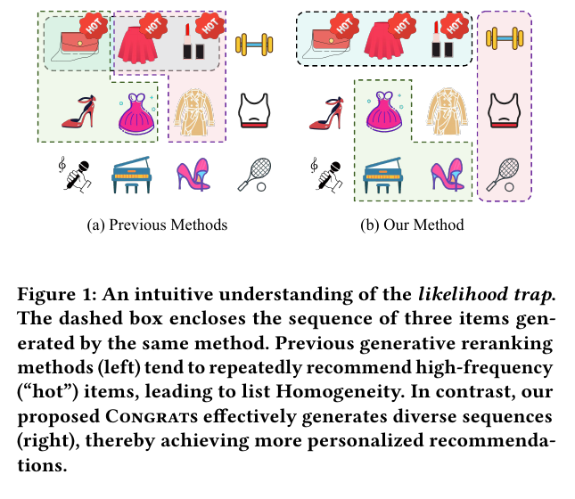
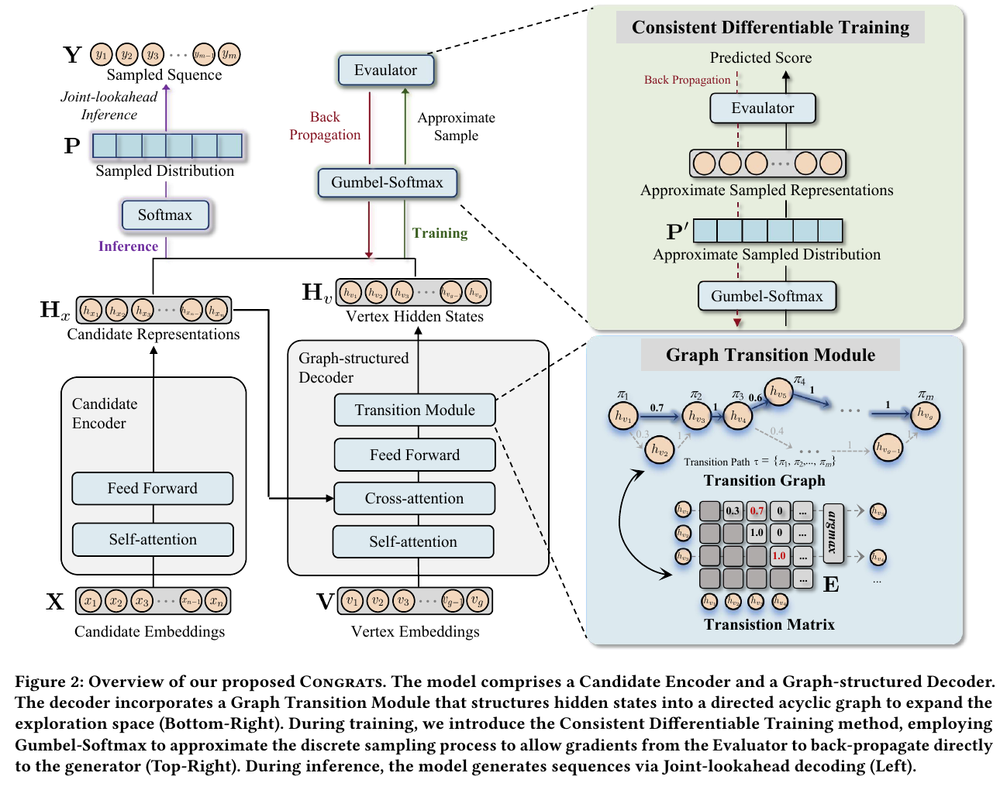
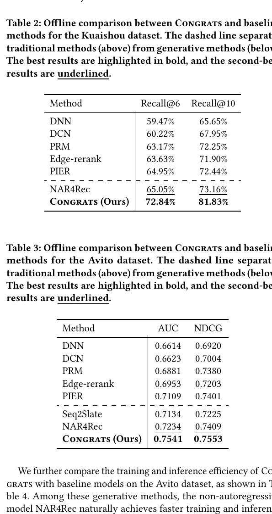
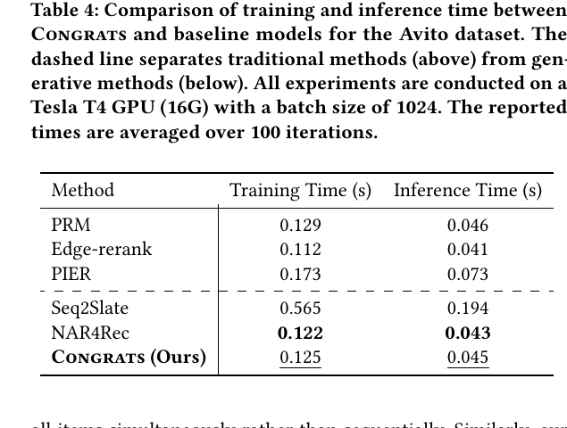
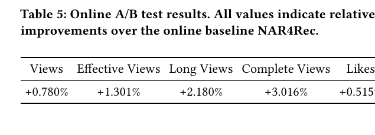
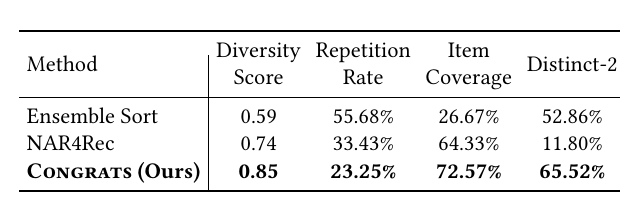
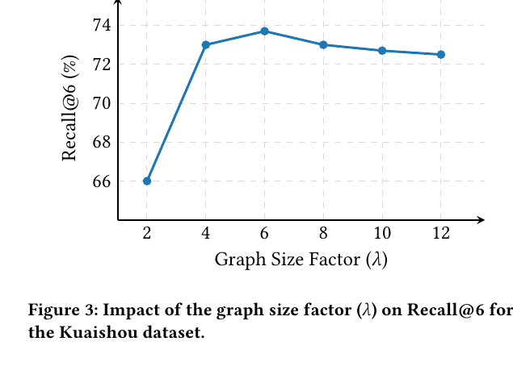
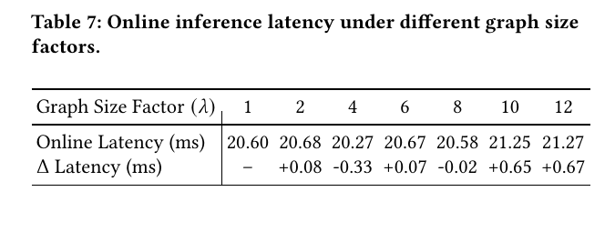
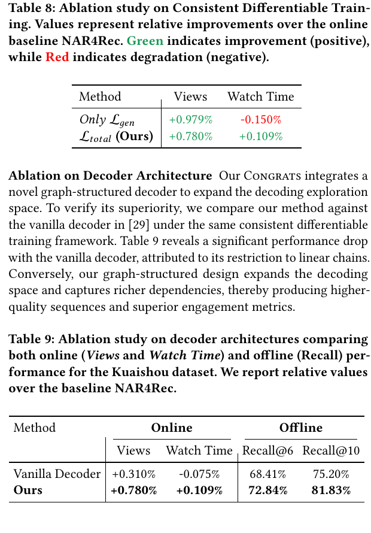

CONGRATS
1. 基本信息
- 标题：Breaking the Likelihood Trap: Consistent Generative Recommendation with Graph-structured Model
- 方法名：CONGRATS，Consistent Graph-structured Generative Recommendation
- 作者：Qiya Yang, Xiaoxi Liang, Zeping Xiao, Ying Cao, Yingjie Deng, Yuxin Ren, Yalong Wang, Yongqi Liu
- 机构：Peking University, Kuaishou Technology
- 时间：KDD 2026；本地 PDF 为 arXiv v3，2026-06-03
- arXiv：https://arxiv.org/abs/2510.10127
- DOI：https://doi.org/10.1145/3770855.3818326
- 本地 PDF：
C:\Users\chaol\Desktop\推荐论文阅读\re-ranking\Congrats-Consistent-Graph-structured-Generative-Recommendation.pdf - 笔记位置：
论文笔记/重排/生成式重排/CONGRATS.md - 分类：重排 / 生成式重排 / 图结构解码 / likelihood trap
2. Vault 内相关论文 / 笔记关系检查
- 推荐系统重排最新进展：综述把本文放在 2025/2026 生成式重排前沿，重点用于说明 likelihood trap 和图结构解码如何影响未来重排研究。
- NAR4Rec：直接前置和线上基线。CONGRATS 明确建立在 NAR4Rec 的 non-autoregressive matching 架构上，把原来的线性位置 decoder 替换成 graph-structured decoder，并在线上 A/B、消融和多样性分析中都以 NAR4Rec 为核心对照。
- 已检查 NLGR：CONGRATS 在相关工作和参考文献中提到 NLGR 所属的 NAR / generator-evaluator 路线，但正文没有把 NLGR 作为直接基线、继承对象或消融对象；当前只保留为背景关系，不建立双向论文链接。
- 已检查 CMR：CMR 是可控多目标重排路线，CONGRATS 关注生成式重排的 likelihood trap、图结构解码和 evaluator 对齐；两者没有直接引用、比较或继承关系，不改写 CMR。
3. 一句话总结
CONGRATS 把 NAR4Rec 的非自回归生成式重排从“每个输出位置独立匹配候选”扩展成“在 个图顶点上选择一条有序路径并同时预测 item”，用图结构 decoder 增大解码空间、缓解高似然重复列表，同时用可微 evaluator 训练目标把 generator 从单纯拟合曝光序列拉回用户偏好。
4. 问题背景
论文延续 generator-evaluator 的重排设定：generator 从 ranking 阶段给出的候选集中生成多个候选列表，evaluator 估计列表级 utility，最后展示最高分列表。这个范式比 point-wise 打分更接近最终曝光，因为列表中 item 之间有组合依赖。
已有生成式重排的核心矛盾是效率和列表依赖。AR 生成器可以逐项建模前缀依赖，但逐步解码成本高，不适合快手这类实时工业链路。NAR4Rec 用 non-autoregressive matching 一次生成候选-位置概率矩阵，解决了延迟问题；但它的解码空间很小，且倾向在每个位置选择最高概率 item，容易形成重复、同质、热门 item 堆叠。
论文把这个现象称为 recommender system 里的 likelihood trap。它借用自然语言生成里的观察：高似然不一定意味着高质量。推荐里的对应现象是，最大似然训练会把概率质量推向高频曝光 item，推理时 generator 反复选这些“安全”的热门 item，导致列表同质化，用户感知质量和多样性下降。
作者还指出，不能直接照搬 LLM/NLG 的采样或 RLHF 解法。重排候选集通常只有几十到几百个 item，随机采样很容易选到相关性不足的尾部候选，造成 relevance collapse；RL 类方法又有训练低效和不稳定问题。因此 CONGRATS 从两个方向改造 NAR 生成式重排：
- 解码结构上，把线性位置序列变成有向无环图上的路径选择，扩大可探索的生成空间。
- 训练目标上，把 evaluator 接入 generator 训练，使生成方向和用户反馈效用保持一致。
4.1 Figure 1：likelihood trap 的直觉

Figure 1 左边展示 previous methods：同一个生成方法产出的三个 item 都落在带有 HOT 标记的高频区域，虚线框里的推荐列表虽然似然高，但内容同质。右边是 CONGRATS：不同生成路径可以落到更分散的 item 组合里。
这张图不是架构图，而是定义论文要解决的 failure mode：如果生成器只追逐训练曝光序列的高似然，它会偏向被广泛曝光的热门局部模式；推荐列表质量却要求在相关性、多样性和个性化之间保持平衡。
5. 问题定义
给定上一阶段产生的 个候选 item：
重排目标是生成长度为 的有序列表：
工业场景中 通常小于 10，而 是几十到几百。Generator 接收用户特征 和候选集 ，输出列表：
Evaluator 对列表 估计总 utility：
其中 是第 个反馈目标的预测 reward，例如 views、likes、clicks， 是人工指定权重。这里的目标不是只让生成序列贴近历史曝光，而是让 generator 参数 生成 evaluator 认为更高 utility 的列表。
这个定义里有一个后续方法依赖的前提：evaluator 必须能可靠模拟用户反馈。如果 evaluator 对反事实列表评分不准，那么把梯度从 evaluator 传回 generator 也会把 generator 推向错误方向。
6. 方法总览

Figure 2 是全文核心设计图，可以分成四块读：
- 左下是 Candidate Encoder：候选 item embedding 与用户特征结合后，经 self-attention 和 feed-forward 得到候选表示 。
- 中下是 Graph-structured Decoder：不再只维护 个位置 embedding，而是维护 个 vertex embedding，经 self-attention、cross-attention 和 transition module 得到顶点隐藏状态 。
- 右下是 Graph Transition Module：从 计算顶点之间的转移矩阵 ，并通过上三角 mask 形成有向无环图，只允许路径向后走。
- 右上是 Consistent Differentiable Training：训练时用 Gumbel-Softmax 近似离散采样，把 sampled list 的 evaluator score 反向传回 generator。
左上角展示 inference：模型先得到预测分布 ，再通过 joint-lookahead 选择顶点路径和 item 序列。图中的关键不是“多了一个 decoder 模块”，而是把原本固定的 个位置变成 个可走顶点，再从这些顶点里选一条长度为 的路径。输出列表长度仍是 ，改变的是中间解码空间。
7. 3.2 Graph-structured Model
7.1 Candidate Encoder
对每个候选 item ，论文先拼接用户特征 ，形成输入矩阵：
然后用 层 Transformer encoder 得到候选表示：
这里 是候选数量， 是表示维度。这个输出后面同时服务于 cross-attention 和 item prediction。
7.2 Graph-structured Decoder：从 个位置扩到 个顶点
NAR4Rec 的 NAR matching 可以理解为“每个输出位置各自从候选集中选 item”。CONGRATS 的变化是：先初始化 个 learnable vertex embeddings：
每个顶点维度与候选表示保持同一维度 。Decoder block 对 做 self-attention，再用这些 vertex states 作为 query，候选表示 作为 key/value 做 cross-attention：
其中 ，，。这个操作合法的隐藏条件是：vertex embeddings 和 candidate hidden states 都被投影到相同维度 ，所以 attention score 可以计算，输出仍是 的 vertex hidden states：
直观上， 大于 后，模型不是被迫把第 个输出绑定到唯一位置 embedding，而是可以在更密的中间顶点空间中选择不同路径。 越大，可选中间顶点越多，潜在路径越丰富；但实验也说明太大时会产生冗余顶点，效果不再提升。
7.3 Graph Transition：用上三角矩阵保证有序路径
模型从 计算转移矩阵：
其中 ，，因此 ，表示从一个顶点走到另一个顶点的概率。
这里必须加 upper-triangular mask，禁止 中 的转移。这个 mask 是方法成立的关键条件：它把顶点图限制成有向无环图，确保生成路径从前往后走，不会回环，也不会破坏输出序列的顺序。
最终路径写成：
并满足：
路径概率是转移概率连乘：
这个约束解释了为什么输出长度没有变：虽然 decoder 产生 个顶点状态，但最终只从中抽取 个有序顶点，每个被选中顶点对应一个输出位置。
7.4 Item Prediction：每个顶点选择一个候选 item
除了路径转移，模型还要知道某个顶点应该输出哪个 item。CONGRATS 复用 NAR matching 思路，计算候选 item 和图顶点之间的匹配矩阵：
其中 ， 表示第 个候选 item 在第 个图顶点被选中的概率。注意这里 softmax 是按顶点列对候选分布归一化，含义是“给定一个顶点，从当前候选集中选 item”。
结合路径概率和 item prediction 概率，一个列表 和路径 的联合概率是：
路径 在训练数据里不可观测，因此训练时对所有有效路径集合 做边缘化：
论文说明这个求和可以用动态规划高效计算。这里的有效路径集合 不是任意路径，而是满足前向有序约束的路径；如果没有上三角 mask，路径可能循环或倒退，动态规划和序列位置解释都会变得不清楚。
7.5 Joint-lookahead inference
训练时可以边缘化所有路径，推理时需要快速选出最可能的序列。CONGRATS 没有先独立选路径再独立选 item，而是同时考虑：
实际算法先对每个顶点预计算最好 item 的概率：
再构造加权转移矩阵：
之后从 start node 开始循环 步：每一步在 中选最优下一个顶点，再在该顶点的 列中选概率最高的 item。
这个设计的效率点在于： 和 的计算是高度并行的，推理时唯一顺序部分是长度为 的循环，而 在工业重排里通常小于 10。因此它比 AR 逐步重跑网络轻很多，同时比普通 NAR 多了路径级 lookahead。
8. 3.3 Consistent Differentiable Learning
论文认为，单纯 仍然会把模型推向高似然曝光序列，而高似然列表不一定带来高用户效用。因此它把 evaluator 接进 generator 训练。
Evaluator 在快手线上用 PLE 架构，多任务预测不同用户行为。训练 evaluator 时使用真实日志的交叉熵：
问题是 generator 采样列表是离散操作，无法直接反向传播。CONGRATS 用 Gumbel-Softmax 对 item prediction 分布做可微近似：
是温度，越低越接近 one-hot 硬采样。训练时用 构造 approximate sampled representations，送进 evaluator 得到每个任务的预测分数。为了鼓励 generator 生成 evaluator 认为正向的列表，论文把生成样本的伪标签设为 ，consistent loss 写成：
最终 generator 的训练目标是：
这个公式的含义是： 负责让生成结果朝 evaluator 偏好的方向移动， 保留对真实曝光序列和图路径概率的建模，防止 generator 只追 evaluator 的局部偏好而丢掉基本生成质量。后面的消融 Table 8 正好说明，只用 会带来更多 views，但 watch time 下降，表现出类似 clickbait 的倾向。
9. 实验设置
论文做了离线实验和快手线上 A/B。
离线数据：
- Kuaishou：2.305 亿 requests、320 万 users、9850 万 items，输入 60 个候选，输出序列长度 6。
- Avito：5360 万 requests、130 万 users、2360 万 ads，序列长度 5，前 21 天训练、后 7 天测试。
主要 baseline 包括 DNN、DCN、PRM、Edge-Rerank、PIER、Seq2Slate 和 NAR4Rec。线上 A/B 直接以生产系统里的 NAR4Rec 为 baseline。
实现细节里几个数值值得记：
- TensorFlow，Adam，学习率 。
- Kuaishou batch size 1024，Avito batch size 256。
- encoder/decoder stack depth 。
- 默认 graph size factor ，即 Kuaishou 中 时有 个顶点。
- Gumbel-Softmax 温度 。
- consistent training 中目标数 ，包括 shows、clicks 和 next-slides。
- 中 。
10. 离线效果与效率

Tables 2 和 3 是主要离线结果。
Kuaishou 上，CONGRATS 的 Recall@6 为 72.84%，Recall@10 为 81.83%；NAR4Rec 分别是 65.05% 和 73.16%。论文特别强调 Recall@6 相比 NAR4Rec 提升约 7 个百分点，说明图结构 decoder 不只是增加多样性，也明显提升 top exposed items 的恢复能力。
Avito 上，CONGRATS 的 AUC 为 0.7541，NDCG 为 0.7553；NAR4Rec 是 0.7234 和 0.7409。这里的提升更偏向 ranking 质量，说明扩大图路径空间没有以牺牲相关性为代价。
作者对结果的解释是：普通 NAR 生成器难以表达复杂 item 关系，而 CONGRATS 把 decoder hidden states 组织成图，让冲突 item 可以落到不同顶点，并通过 graph transition 显式建模依赖。

Table 4 检查效率。CONGRATS 在 Avito 上训练时间 0.125s、推理时间 0.045s；NAR4Rec 是 0.122s 和 0.043s，几乎相同。Seq2Slate 作为 AR baseline 则是 0.565s 和 0.194s。
这个表支撑论文的工程主张：CONGRATS 增大的是 decoder 中间路径空间，不是把推理改回 AR 逐步重跑网络。 和 并行计算，只有输出长度 上的小循环，因此可以保持接近 NAR4Rec 的延迟。
11. 线上 A/B

线上实验在快手工业平台进行，持续 5 天，使用 5% 总流量，baseline 是已部署的 NAR4Rec。Table 5 中所有值都是相对 NAR4Rec 的提升：
- Views：+0.780%
- Effective Views：+1.301%
- Long Views：+2.180%
- Complete Views：+3.016%
- Likes：+0.515%
论文补充快手平台上的经验阈值：Views 超过 0.2%、Likes 超过 0.5% 就非常显著。因此这组结果是全文最强的工业证据：CONGRATS 不仅离线 Recall 更高，也能转化为更多视频消费和更强用户满意度信号。
12. 分析实验
12.1 Cross-list diversity
论文用 pairwise Jaccard similarity 定义跨列表多样性：
值越高，生成列表之间重叠越少。它还统计 Repetition Rate、Item Coverage 和 Distinct-2：

Table 6 直接展示 likelihood trap 的经验信号。NAR4Rec 的 Diversity Score 是 0.74，Repetition Rate 是 33.43%，Item Coverage 是 64.33%，Distinct-2 只有 11.80%；CONGRATS 分别是 0.85、23.25%、72.57%、65.52%。
这说明 CONGRATS 不只是换了更强预测器，而是确实减少了不同生成列表之间的重复，并提高了局部 bigram 多样性。作者把 NAR4Rec 视作引入 CONGRATS 框架之前的原始生成器，认为这些差异是 likelihood trap 被缓解的证据。
12.2 Graph size factor

Figure 3 分析 对 Recall@6 的影响。，因此 越大，图中中间顶点越多，可行路径也越多。Recall@6 从 到 明显提升，在 附近达到最好；继续增大到 8、10、12 后略降。
这支持一个很实际的设计判断：图结构需要足够大才能逃出线性 decoder 的狭窄空间，但过大的图会引入冗余顶点，反而给选择路径带来噪声。

Table 7 说明更大的 没有显著增加线上延迟。 时 latency 是 20.60 ms， 时是 20.27 ms， 时是 21.27 ms。数值非单调，论文归因于线上 batching、调度和系统负载波动。
作者最终默认 ，不是因为它离线 Recall@6 最高，而是它已经提供较强 Recall@6，同时图结构更紧凑、线上延迟稳定。这是一个典型工业取舍：效果曲线的峰值不一定是线上默认点。
13. 消融实验

Table 8 比较只用 和完整 。只用生成损失时，Views +0.979%，但 Watch Time -0.150%；完整目标则 Views +0.780%，Watch Time +0.109%。
这组结果保留了论文对 baseline/variant 的重要判断：单纯生成式目标会更容易追逐“吸引点击或打开”的 item，但未必让用户持续观看，类似 clickbait。把 evaluator 接入训练后，Views 增幅略低，但 Watch Time 从负变正，说明模型更符合整体用户效用。
Table 9 比较 vanilla decoder 和 graph-structured decoder，二者都在 consistent differentiable training 下训练。Vanilla Decoder 相对 NAR4Rec 的 Views 为 +0.310%，Watch Time 为 -0.075%，Recall@6/10 为 68.41%/75.20%；图结构 decoder 达到 +0.780%、+0.109%、72.84%/81.83%。
这个消融把两个贡献拆开了：consistent training 本身不够，decoder 如果仍是线性链，路径空间受限，线上 Watch Time 仍可能下降；图结构 decoder 才是提升 Recall 和用户 engagement 的关键结构改造。
14. 结论、限制和记忆点
CONGRATS 的贡献可以拆成三层：
- 问题层：把 NLG 里的 likelihood trap 明确迁移到生成式推荐重排，指出高似然曝光序列会偏向热门、重复、同质 item。
- 结构层：用 graph-structured decoder 把 个输出位置扩成 个顶点上的有序路径，扩大 NAR 解码空间，同时保持接近 NAR4Rec 的推理效率。
- 训练层：用 Gumbel-Softmax 让 sampled list 近似可微，把 evaluator 的用户偏好信号反向传回 generator，避免只拟合曝光似然。
需要保留的限制：
- 方法强依赖 evaluator 的可靠性和任务权重 。如果 evaluator 或权重不能代表真实长期满意度，consistent training 会稳定优化错误目标。
- 图结构路径在推理时仍用近似的 joint-lookahead / sequential argmax，并不是全局精确搜索所有路径；它是在效率和路径探索之间折中。
- 的最优值依赖数据和线上约束。论文中 Recall@6 更高，但默认用 ，说明工程部署并不只看离线峰值。
- 论文主要在快手短视频和 Avito 上验证，是否适用于电商货架、搜索结果页或强业务约束场景，还需要看 evaluator、候选规模和延迟预算。
- 它没有显式讨论最终列表去重、业务硬约束或安全约束如何注入 graph path；实际系统里这些可能仍需要额外 mask 或后处理。
记忆锚点：
- NAR4Rec 解决速度，CONGRATS 解决 NAR 的窄解码空间和高似然重复。
- 核心形状：候选 个，输出 个，图顶点 个； 管路径， 管每个顶点选哪个 item。
- 关键约束：上三角 mask 让图变成 DAG，路径满足 ，所以输出顺序合法。
- 训练目标：，同时保留生成似然和 evaluator 对齐。
- 最强证据：相对 NAR4Rec，Kuaishou Recall@6 从 65.05% 到 72.84%，线上 Views +0.780%、Likes +0.515%，跨列表重复率从 33.43% 降到 23.25%。
15. 图表覆盖检查
- 设计图：Figure 1 已覆盖 likelihood trap 直觉；Figure 2 已覆盖整体框架、图结构 decoder、transition module 和可微训练。
- 主结果表：Tables 2/3 已覆盖离线主结果；Table 4 已覆盖效率；Table 5 已覆盖快手线上 A/B。
- 分析 / 消融图表：Table 6 已覆盖多样性；Figure 3 和 Table 7 已覆盖 graph size 与延迟；Tables 8/9 已覆盖训练目标和 decoder 消融。